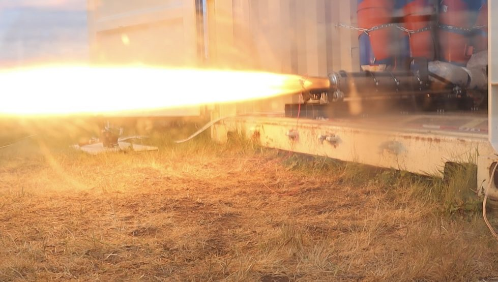
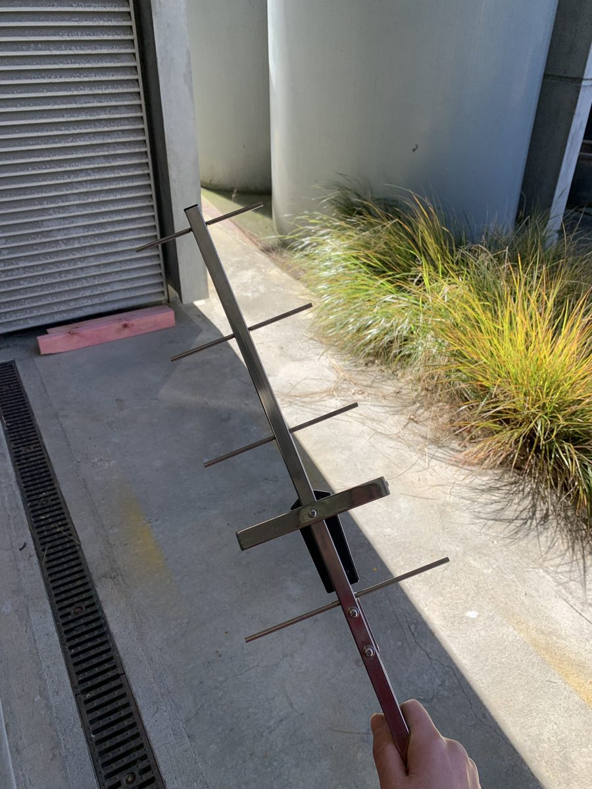
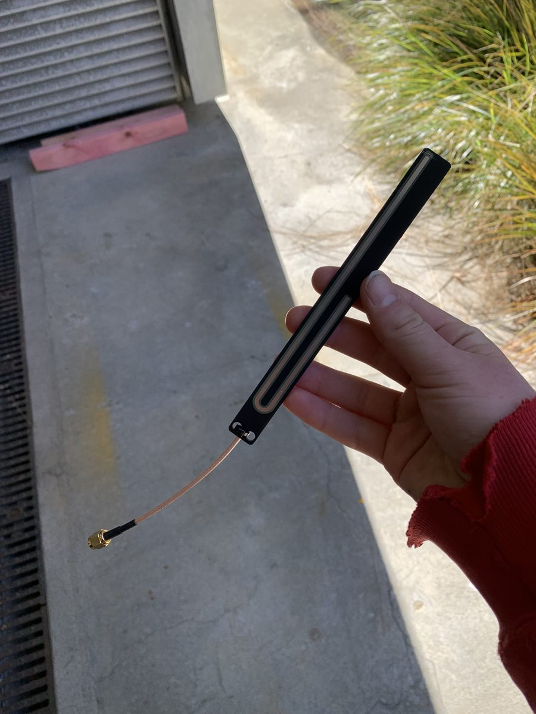

RF Rocket Downlink University of Canterbury Aerospace Club
Overview
For my final year honours project, I designed and built a long-range LoRa telemetry system for the UC Aerospace hybrid rocket, paired with a dynamic link budget analysis that predicts signal margin across the full flight profile. As sole author I owned it end to end: radio PCB, RF matching, antenna, firmware and the ground station data pipeline, through to manufactured hardware on the bench.

The Project
The brief was to stream flight data from the rocket to the ground station, and to understand how the link behaves. Key constraints:
- Dynamic link: range, altitude and orientation change path loss and antenna gain in flight, so a static budget is not enough
- Regulatory: within the NZ ISM band and its power limits
- Integration: CAN interface to the flight computer, one board for flight and ground
- Field use: live data to the team at a remote site with no internet
How I Built It
I designed a custom radio PCB in KiCad around an STM32H5 microcontroller and a Semtech SX1262 LoRa transceiver, operating at 915 MHz. The board receives flight data from the flight computer over CAN and drives the radio over SPI. I calculated the RF matching network for the SX1262 at 915 MHz.
The same PCB is used on both the rocket and the ground station. That meant only one board to design, assemble and bring up, and one firmware codebase to maintain. Any fault found on one end was fixed on both, which cut debugging time. It also gave me a known-good reference board for bench testing, and boards can be swapped between ends as spares.
The J-pole antenna was designed as its own PCB with a 256 mm radiator, deliberately long to leave trim allowance for VNA tuning onto frequency. I simulated the Gerber geometry in NEC2 to validate it. On the ground a Yagi feeds the receive board, which streams telemetry into a custom-built dashboard so the team can monitor the flight live.
Alongside the hardware I built a dynamic link budget model that tracks received power and link margin through the flight rather than at a single worst-case point.


Results
The telemetry PCBs were manufactured and brought up on the bench, and the J-pole antenna was brought up on the VNA for tuning. The project delivered a reusable flight and ground radio platform for UC Aerospace and a method for predicting telemetry performance before launch.